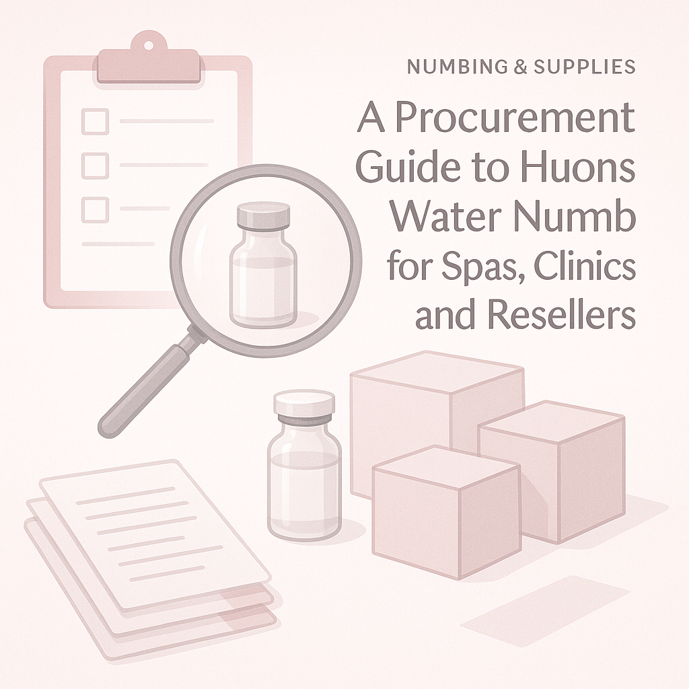
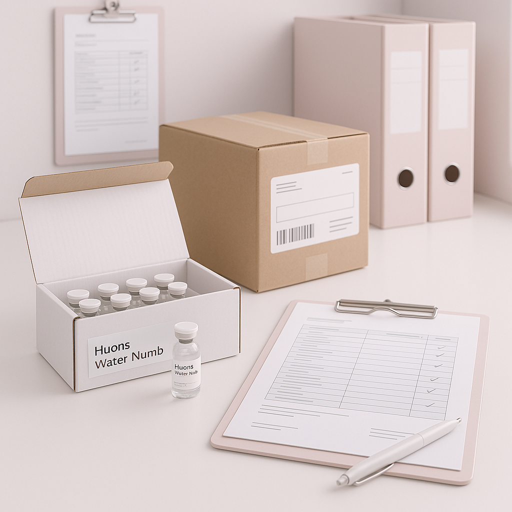

This guide provides crucial insights for clinics, spas, and resellers looking to source Huons Water Numb effectively.
In the competitive landscape of spas, clinics, and resellers, sourcing the right numbing supplies can be a daunting task. Professional buyers often face challenges in ensuring product quality, timely delivery, and cost-effectiveness. Understanding how to procure Huons Water Numb effectively is essential for maintaining client satisfaction and operational efficiency.
This guide aims to simplify the procurement process for Huons Water Numb, highlighting key considerations and practical insights to empower your purchasing decisions. Whether you're a distributor or a clinic, knowing how to navigate the supply chain can significantly impact your business outcomes.
Key Takeaways
- Identify reliable huons water numb distributors to ensure product quality and consistency.
- Understand MOQ requirements to optimize your inventory management and reorder planning.
- Evaluate packaging options for ease of handling and storage.
- Communicate clearly with suppliers regarding shipping and documentation needs.
- Plan ahead for reorders to avoid stock shortages and ensure uninterrupted service.
What this guide covers
- Understanding Huons Water Numb
- Buyer scenarios and planning needs
- Comparison criteria for product selection
- Checklist for requesting quotes
- Shipping, packing, and documentation considerations
- MOQ, quotation, and reorder planning
- Common buyer questions
What buyers should understand first

Huons Water Numb is a topical numbing agent primarily used in various aesthetic and clinical applications. It is designed to minimize discomfort during procedures, making it a vital product for clinics and spas that prioritize client comfort. As a professional buyer, understanding the nature of this product, including its formulation and intended use, is crucial for ensuring that you meet your clients' expectations while adhering to industry standards.
While the specifics of application and treatment protocols are not covered here, it's important to know that the effectiveness of Huons Water Numb can be influenced by factors such as product handling and storage conditions. This understanding will help you in sourcing and managing your inventory more effectively.
Which buyers is this most relevant for?
This guide is particularly relevant for various buyer types, including:
- Clinics: Medical and aesthetic clinics that incorporate numbing agents into their services will benefit from understanding how to source Huons Water Numb effectively to ensure client satisfaction.
- Spas: Spas that offer beauty treatments often require numbing supplies to enhance the client experience during procedures.
- Resellers: Distributors and resellers looking to stock Huons Water Numb must navigate wholesale purchasing to meet demand while maintaining profitability.
Each of these buyers has unique order planning needs, from managing inventory levels to aligning with customer expectations for product availability.
How to compare options before ordering
When considering Huons Water Numb for your business, it's essential to compare various options to ensure you make an informed decision. Here are some practical criteria to evaluate:
- Product Type: Ensure you are selecting the correct formulation that meets your specific needs.
- Brand Reputation: Consider the reliability of the supplier and the brand's standing in the market.
- Packaging: Look for packaging that is user-friendly and suitable for your storage capabilities.
- Batch/Expiry Visibility: Ensure that the supplier provides clear information on batch numbers and expiry dates to maintain product integrity.
- Supplier Communication: Evaluate how responsive and informative the supplier is regarding your inquiries and needs.
- Destination Requirements: Consider any specific requirements for shipping to your location, including customs and handling protocols.
Buyer checklist before requesting a quote

- Define your required quantities and variants of Huons Water Numb.
- Confirm your shipping destination and any special requirements.
- Gather necessary documentation for your business registration and tax identification.
- Prepare a list of questions to clarify with potential suppliers.
- Determine your budget and pricing expectations for wholesale purchasing.
- Review your inventory management system for optimal reorder planning.
Shipping, packing and documentation questions
Logistics play a critical role in the procurement process. Here are some common considerations:
- What are the available shipping options, and how do they affect delivery times?
- Are there specific packing requirements to ensure product safety during transit?
- What documentation is needed for customs clearance, and who is responsible for it?
- How can you track your shipment once it has been dispatched?
- What are the supplier's policies on damaged or lost shipments?
MOQ, quotation and reorder planning
Understanding Minimum Order Quantity (MOQ) is essential for effective procurement. Different suppliers may have varying MOQs, which can impact your purchasing strategy. Here’s how to prepare:
- Determine the quantities you need based on your sales projections and current inventory levels.
- Identify any variants of Huons Water Numb that you may require for different applications.
- Provide clear destination details to suppliers to ensure accurate shipping quotes.
- Consider SOLA's resources for confirming current availability and obtaining a wholesale quotation.
FAQ
What is Huons Water Numb?
Huons Water Numb is a topical numbing agent used in various aesthetic and clinical applications to minimize discomfort during procedures.
How do I find a reliable huons water numb distributor?
Research potential suppliers, check reviews, and ensure they have a good reputation in the industry.
What factors should I consider when comparing suppliers?
Consider product quality, packaging, communication, shipping options, and pricing when evaluating suppliers.
What is the typical MOQ for Huons Water Numb?
The MOQ can vary by supplier, so it’s essential to confirm this before placing an order.
How can I ensure timely delivery of my order?
Communicate clearly with your supplier about your delivery needs and confirm shipping options and timelines.
Contact SOLA for wholesale quotation via WhatsApp.
Planning a wholesale request?
Send product names, quantities and destination for a tailored discussion.
Contact SOLA on WhatsApp →General educational content for professional buyers. Not medical, legal, regulatory or import advice.